Train Station Staff Scheduling System
- Role
- UI designer and use case author
- Team
- 6 (equal contribution)
- My part
- Almost all Figma wireframes; use cases UC-08 and UC-10
- Tools
- Figma, UML
The problem
Train station managers built weekly staff rosters by hand, juggling availability, preferences and strict operating rules. The system lets managers allocate train services to staff each week, lets staff submit availability and job preferences, and lets IT administrators manage user accounts, with the rules enforced by the system instead of by memory.
My part: the wireframes
I designed almost all of the Figma wireframes, covering the three roles (manager, staff and IT administrator). I drew a screen for every path through a use case, including errors and empty states, not just the main flow, so the team could check each requirement against something concrete. The full set is in the Figma file linked above.
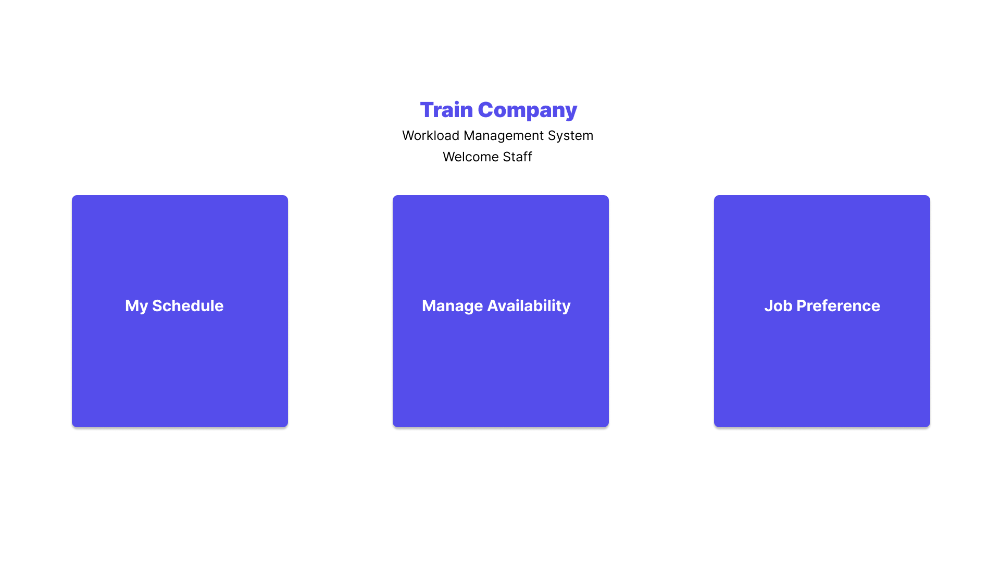
The rules the system enforces
| Rule | Requirement |
|---|---|
| Availability deadline | Availability for a week must be submitted by 23:59 on the preceding Wednesday |
| Conductor | Exactly one train conductor per train service |
| Support staff | One assistant conductor and one cleaner for every two passenger carriages |
| Engine driver | No driver operates a locomotive for more than two consecutive hours |
| No double-booking | No staff member is assigned to overlapping jobs |
| Modification lock | No changes to an assignment within 24 hours of its start |
Rules only help if users can see them. In the wireframes, a rule that blocks an action shows up as a clear message at the moment it applies:
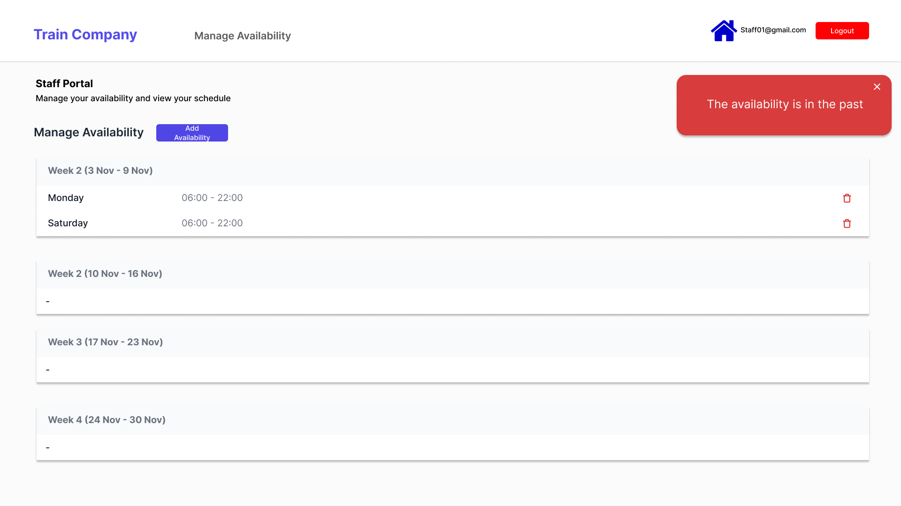
UC-08: Reject assigned job (Staff)
A staff member views their current and upcoming assignments and can reject a future one, but must give a reason, and the manager is notified.
- View assignments
- Select a job
- Is it in a future week? No Jobs in the active week cannot be rejected ↩ back to list Yes
- Warning: manager will be notified
- Enter reason
- Reason provided? No Prompt for reason ↩ back to enter reason Yes
- Save rejection
- Notify manager
- Update job list
Main flow
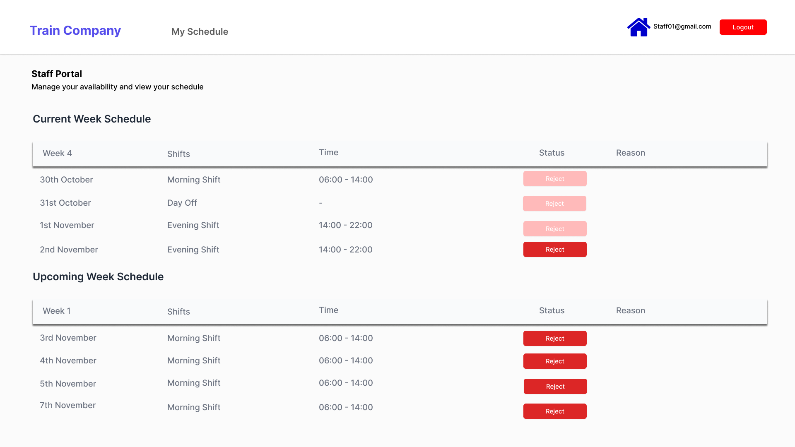
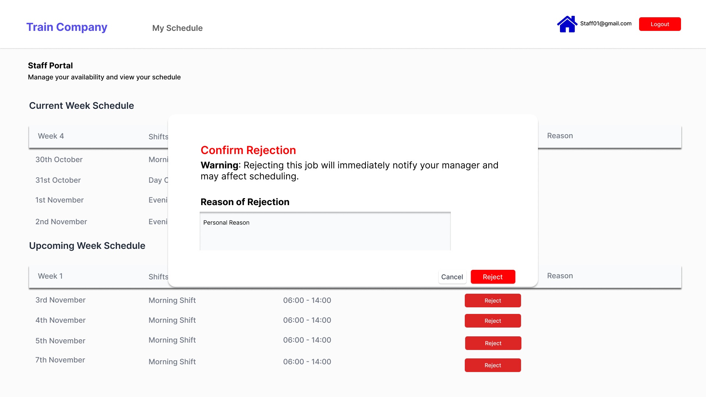
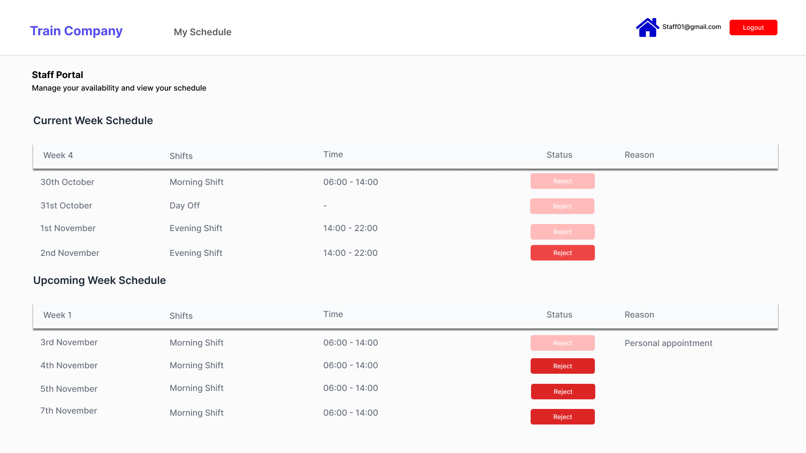
Alternative paths
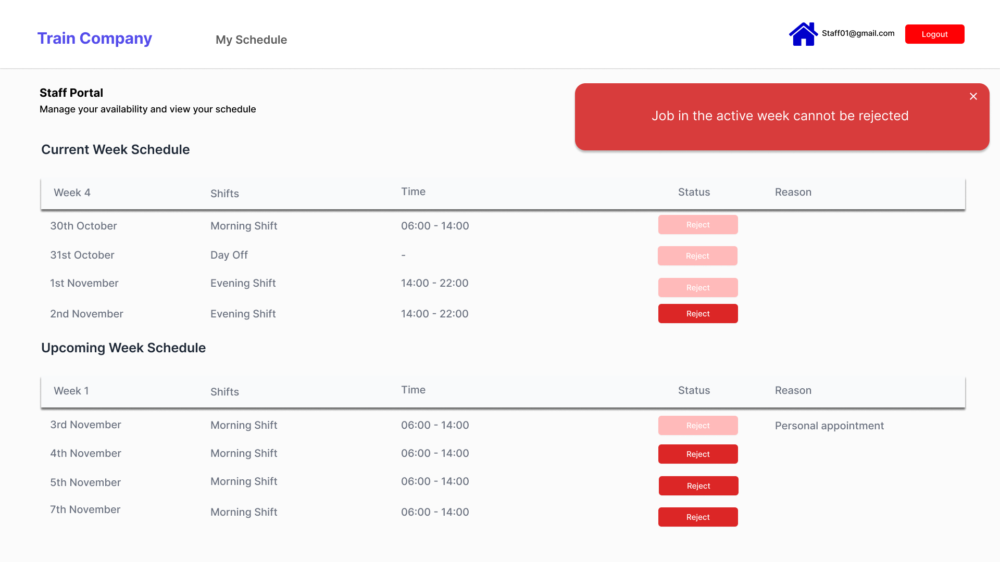
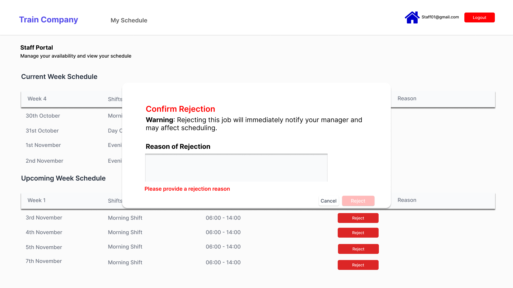
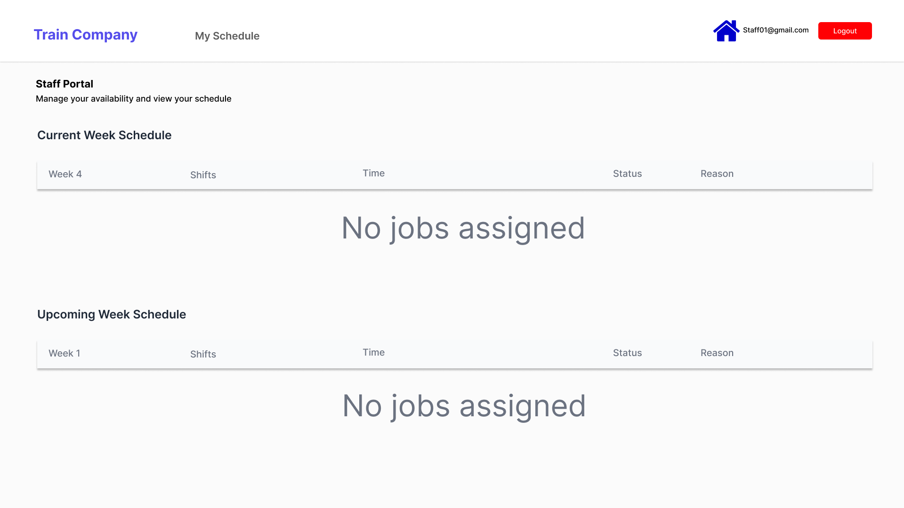
The alternative paths matter most: they protect the current week's roster from last-minute changes, make sure managers always know why a job was turned down, and make sure the screen still makes sense when there is nothing to show.
UC-10: Update user details (IT Administrator)
An IT administrator edits an existing account's name, email, role, department or phone number. All fields are required, and the system rejects an email address that already belongs to another account. Changing a role changes what that person can access, since the system gives Staff, Manager and IT Administrator roles different permissions.
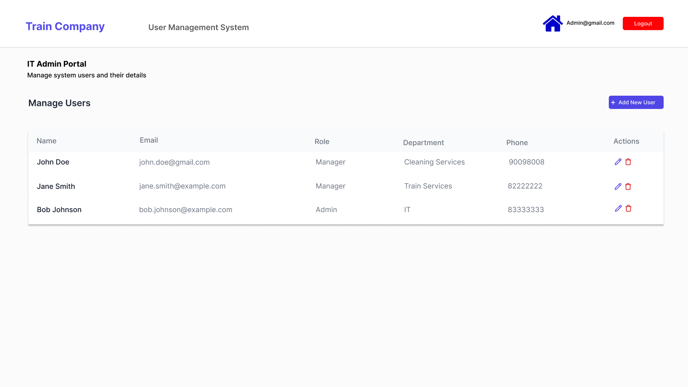
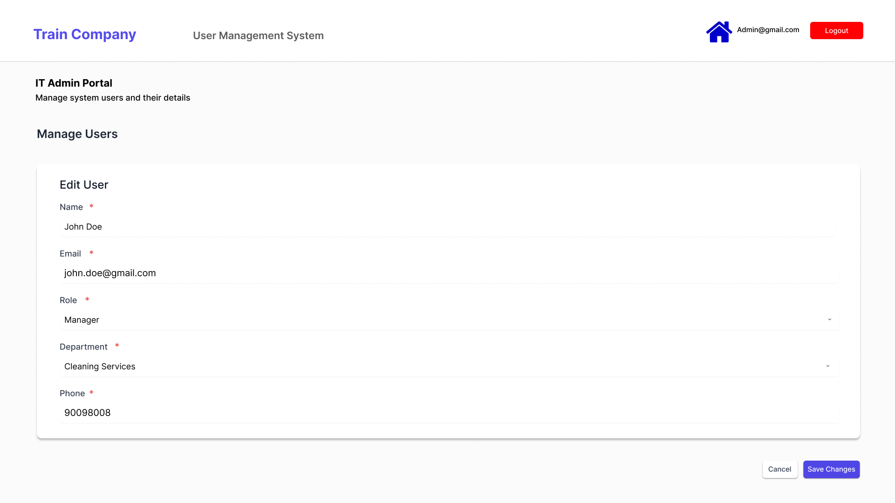
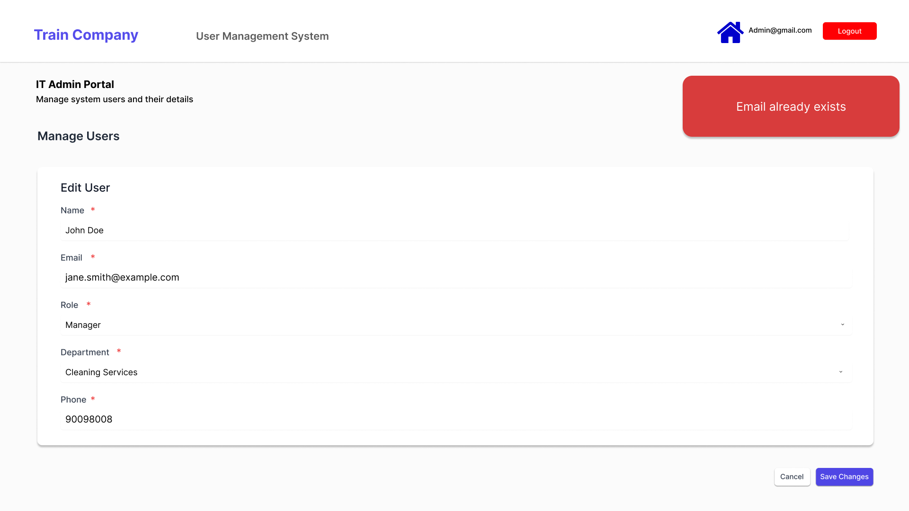
What the team built around this
- A three-layer architecture (presentation, business, persistence), with each layer talking only to the next.
- The Factory pattern, so new user types can be added without changing existing code.
- The Strategy pattern, so managers can switch how staff are ranked for a job (for example, by fewest hours or by route preference).
- Black-box testing with a cause-effect table for adding availability, and white-box testing with a control flow graph and basis-path test cases for date validation, the same past-date rule shown in the availability wireframe.
What I learned
- Wireframes are a requirements tool, not just a design step. Drawing every path as a screen exposed details the written use cases left open, such as what an empty schedule looks like and where an error message appears.
- Alternative scenarios are where the business rules live. Most of UC-08's screens are about stopping a rejection, and each one needs a message the user can understand.
- Designing error states is the first step of testing them. Each blocked-action screen maps directly to a test case: try to reject a current-week job, submit without a reason, reuse an existing email.